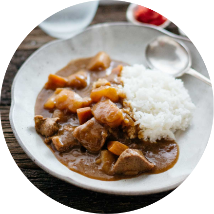

Fresh Beef
AAA Angus Beef Sirloin Tip Steak
Average Price: $17.56/1kg
Storage Tips:
- Make sure your refrigerator is between 34° and 40°F.
- Store raw meat on the lowermost shelf or in its own drawer.
- Store meat with a plate underneath – especially when thawing – to collect run-off juices.
- Clean your fridge regularly.
Meal Recommendation
Curry Beef
Fragrant Beef Curry with Rice
Ingredients:
- 2 pounds well-trimmed boneless beef stew meat
- 3 large tomatoes, quartered
- 3 Carrots, quartered- 2 large onions, sliced 6 whole cloves
- 1 1/2 cups whole milk
- 2 large garlic cloves, chopped
- 2 cinnamon sticks
- 1/4 teaspoon dried crushed red pepper
- 3 tablespoons Major Grey chutney
- 2 tablespoons minced peeled fresh ginger
- 1 1/2 tablespoons curry powder